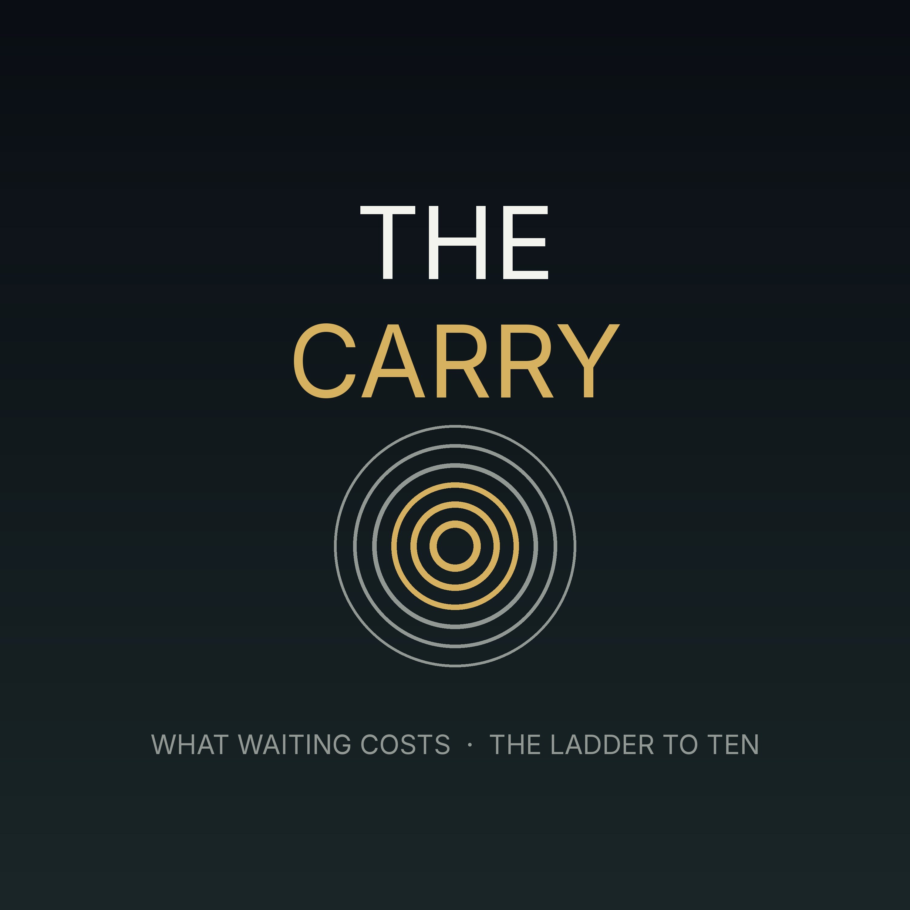

The Carry
The Carry
A weekly half-hour on the decisions that are sitting still. Part one prices what it costs to leave each one open. Part two takes one thread on the long climb to ten million and pushes it forward. The two halves are usually the same story.
Subscribe
Paste this into Overcast, Pocket Casts, or any podcast app:
https://adil1248.github.io/c697ba1d3413965680/feed.xml